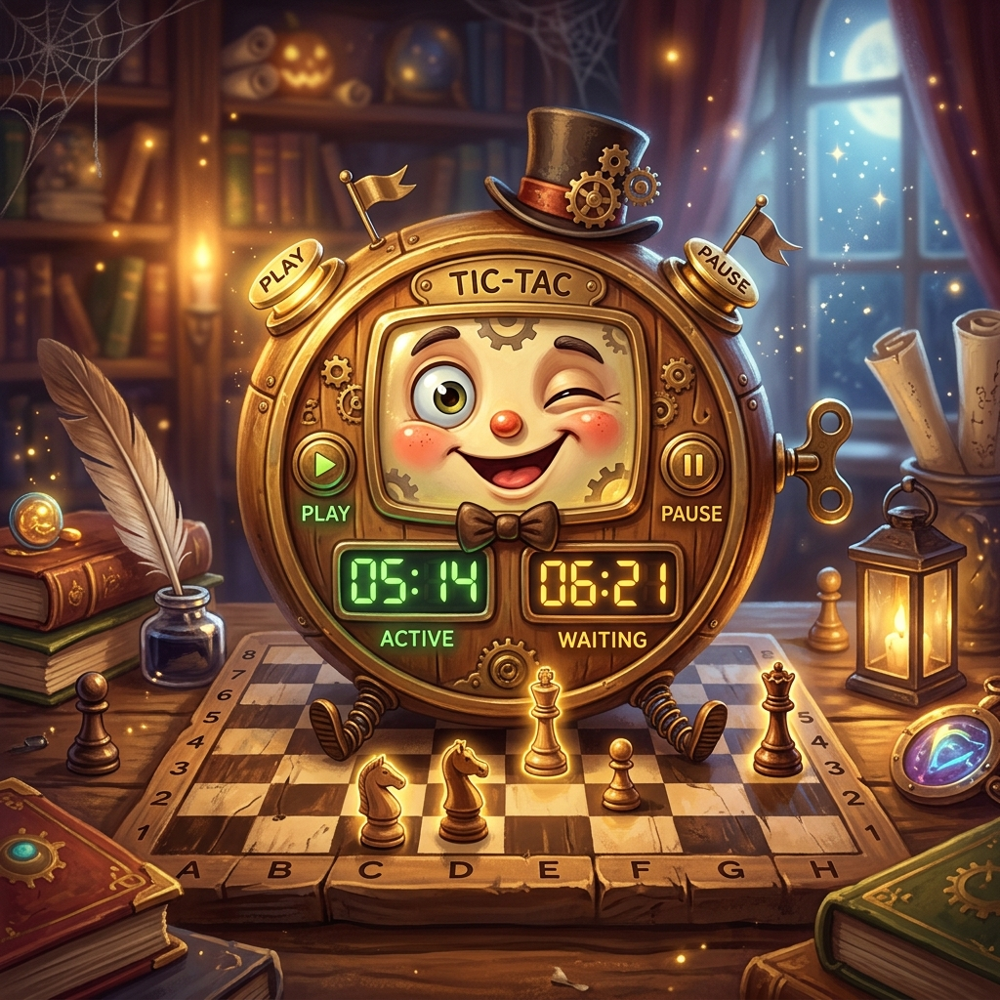
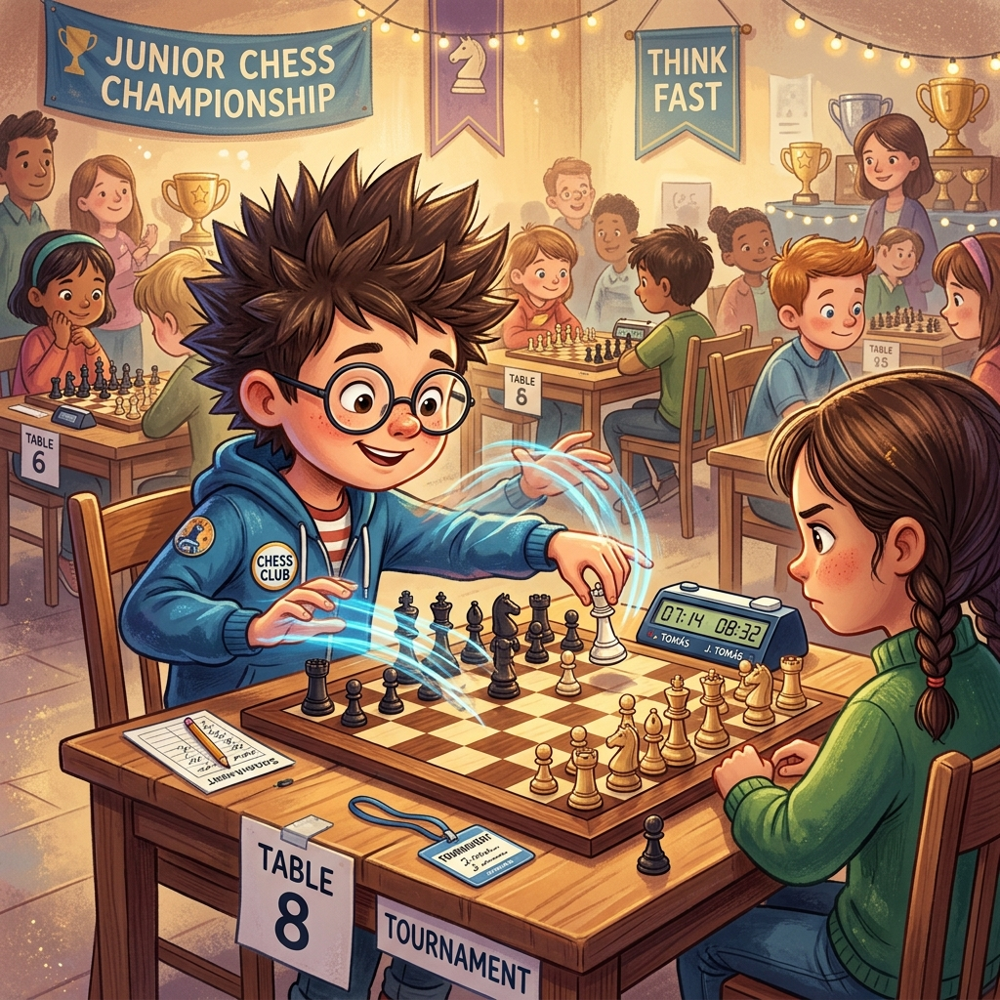
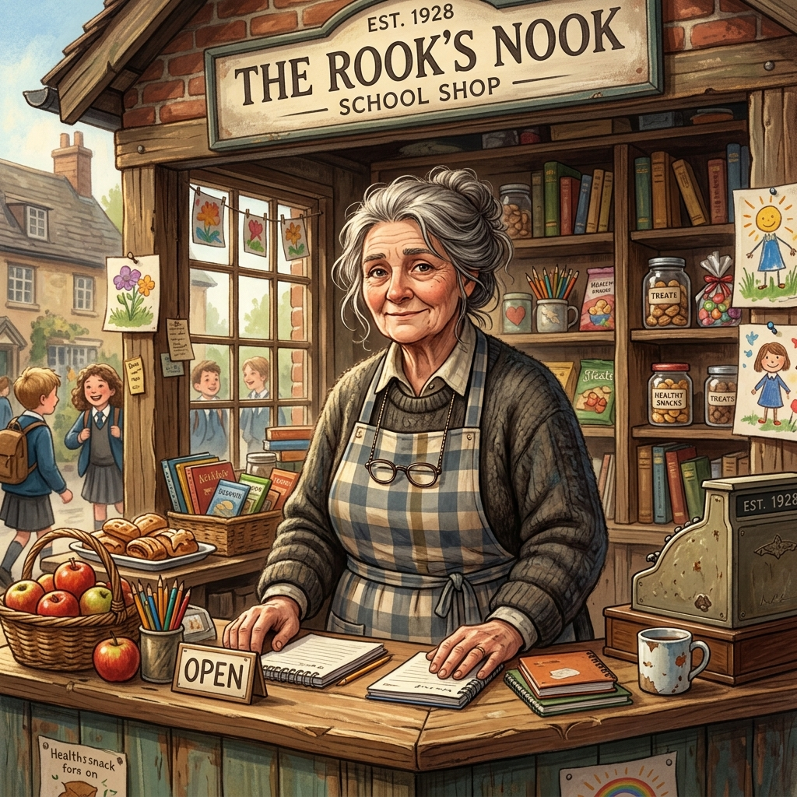

Tic, Tac, Jaque Mate
Donde Martina descubre que el reloj corre igual para todos, pero el pánico es opcional
♟️ Ver partida histórica: Mate de Boden (1853) ↓▶️ ¿Prefieres escuchar la historia? Clic aquí para ver el Audiolibro Animado
La noche antes del torneo escolar, Martina no podía dormir. No era por los nervios —los nervios eran para otra gente—, era por el reloj. El reloj de ajedrez que su papá le había comprado estaba sobre la mesa de noche, y aunque estaba apagado, ella podía oírlo. Tic. Tac. Tic. Tac.
—Es un reloj —dijo su papá desde la puerta, viéndola con los ojos abiertos—. No muerde.
—Lo sé —dijo Martina—. Pero habla.
Su papá la miró con esa expresión que ponía cuando no sabía si Martina hablaba en serio o estaba a punto de soltar algo ridículo. Generalmente eran las dos cosas.
—¿Y qué dice?
—Dice que mañana tengo quince minutos por partida. Más cinco segundos por jugada. Y que si me quedo sin tiempo, pierdo así tenga dama de ventaja y el rival solo tenga un rey desnudo y con gripe.
—Eso no lo dice el reloj. Eso lo dicen las reglas.
—El reloj las aprendió. Es muy estudioso.
Su papá suspiró, le dio un beso en la frente y apagó la luz. Martina cerró los ojos. El tic-tac se transformó lentamente en otra cosa: en el latido de un tambor lejano. Como si en alguna parte, un ejército de piezas estuviera marchando hacia el Gran Río Central.
El gimnasio del colegio olía a piso recién encerado y a emoción. Dieciséis mesas en dos filas. Dieciséis tableros. Treinta y dos relojes, todos haciendo tic-tac al mismo tiempo, como si el edificio tuviera taquicardia.
Martina llegó temprano, con su polera de IA con ajedrez y sus shorts de vóley. Se sentó en la mesa 3. Su reloj estaba frente a ella, igual al de su casa pero con cara de pocos amigos.
—Buenos días —dijo el reloj.
Martina no se inmutó. Sabía que los relojes no hablaban. Pero también sabía que su imaginación sí, y que su imaginación era mucho más entretenida que la realidad. Así que decidió escuchar.
—Me llamo Tictac —dijo el reloj con voz de locutor radial—. Aunque en el reino me conocen como «el que explica la relatividad cuando alguien se queda sin tiempo». Hoy vine de incógnito. No le digas a nadie que estoy aquí. Sobre todo al de la mesa 8, que ya me vio y me quiere regalar por segunda vez.

Martina sonrió. El reloj parlante del Reino de las Sesenta y Cuatro Casillas se había colado en su torneo. O al menos su versión imaginaria.
—¿Vas a ayudarme? —preguntó Martina en voz baja, porque hablar con un reloj frente a otros niños era técnicamente raro, incluso para ella.
—Voy a ser imparcial —dijo Tictac—. El tiempo es democrático: los mismos quince minutos para ti que para tu rival. Lo que hagas con ellos es tu problema. Pero un consejo: no me pegues. Odio que me peguen.
—Nunca le pego a los relojes.
—Mi jugadora favorita.
El rival de la primera ronda se llamaba Tomás. Diez años. Gafas. Peinado de erizo. Y un estilo de juego que Martina detectó de inmediato: velocidad pura.

Tomás se sentó, puso el reloj en el centro, y antes de que el árbitro terminara de decir «pueden comenzar», ya había jugado e4.
Plaf. El botón del reloj sonó como una cachetada.
Martina lo miró. Tomás la miraba a ella como quien mira un semáforo en rojo: con impaciencia. Como si cada segundo que Martina pensaba fuera un insulto personal.
—Respira —le susurró Tictac—. Él corre. Tú decides.
Martina respiró. Miró el tablero. e4. Lo de siempre. Respondió e5 con calma.
Tomás jugó Cf3. Plaf. Martina respondió d6. Tac. Defensa Philidor. Tomás avanzó c3. Plaf. Y Martina jugó f5. Tac. Un contragolpe agresivo. El tablero empezaba a arder, pero Tomás seguía moviendo como si solo le importara apagar su reloj.
En ese momento, Martina vio algo en la casilla e4.
Un bigote.
Parpadeó. El bigote seguía ahí, flotando ligeramente despegado sobre el peón blanco. Debajo del bigote, una voz minúscula:
—Ese muchacho juega como si el tablero estuviera en llamas —dijo Peoncito, apareciendo de cuerpo entero sobre la casilla, con su bigote más torcido que nunca—. La Apertura Italiana no se juega así. La Apertura Italiana se juega con respeto. Con tomate y albahaca. Como las empanadas de Torreta.
—Peoncito, estoy en un torneo —susurró Martina.
—Lo sé. Y estás perdiendo tiempo valioso escuchando a un peón imaginario. Así que mueve, que el erizo te está mirando feo.
La apertura se convirtió en un caos táctico. Tomás sacrificó piezas y capturó peones al vuelo. Plaf, tac, plaf, tac. Martina respondía con desarrollo firme. Sacó sus caballos, su alfil a d7, su otro alfil a f5, y enrocó largo. 0-0-0.
En la jugada trece, Tomás cometió su primer error. Creyendo que su posición era inexpugnable, también enrocó largo. 0-0-0. Plaf. Una jugada que parecía natural, pero que lo encerraba en su propia tumba.
—Mijaíl Tal —susurró Tictac— decía que los rivales que juegan rápido siempre tienen prisa por equivocarse. Pero a veces hay que mostrarles exactamente en qué.
Martina avanzó su peón a d5, atacando el centro. Tomás, sin pensar, capturó con su alfil: Axd5. Plaf.
Y de pronto, Tomás se detuvo.
Por primera vez en toda la partida, no movió inmediatamente. Miró el tablero. Miró a Martina. Volvió a mirar el tablero. Su mano izquierda tamborileó sobre la mesa.
—Se le acabó la velocidad —dijo Peoncito, acomodándose el bigote—. Ahora empieza el ajedrez de verdad.
Tomás jugó De2. Una jugada sólida, pero lenta. Martina miró su reloj: le quedaban seis minutos. Tomás tenía once.
—Está ganando por tiempo —dijo Peoncito.
—El tiempo no gana partidas —respondió Martina—. Las ganan las jugadas.
Tomás sonreía. Creía tener la partida controlada. Pero Martina veía algo diferente. Veía el famoso «Mate de Boden», jugado por primera vez en 1869. Y lo estaba reproduciendo en el tablero de la mesa tres.
—Judith Polgar —dijo Tictac con tono de documental— enseñó que a veces el ataque más brutal viene de sacrificar la pieza más valiosa. Y yo agregaría, por experiencia propia: cada segundo que pierdes por acelerarte es un segundo que te pasará factura. La relatividad no perdona. Ni yo.
—Tictac, cállate.
—Cállate tú, que tienes mate en tres y no lo ves.
Martina parpadeó. Mate en tres. ¿Dónde?
Respiró hondo. Dejó de oír los tic-tac. Dejó de oír a Peoncito. Dejó de oír a Tictac. Dejó de oír a los niños de las mesas vecinas. Solo existía el tablero. Solo existía la posición.
Cuarenta y cinco segundos. Eso tardó en encontrarlo.
Dama captura en c3. Jaque. El peón blanco debe tomar. Alfil a a3. Y entonces...
—No es mate en tres —murmuró Martina—. Es mate en dos.
—Perdón —dijo Tictac—. Soy reloj, no computadora. Redondeé.
Martina sacrificó a la pieza más fuerte del tablero.
Dxc3+.
Tomás la miró como si le hubiera escupido el tablero. Abrió la boca. La cerró. Miró a Martina. Miró la dama ofrecida. Miró el reloj.
—Pero... —empezó a decir.
—Lo tomo —dijo Martina, con una sonrisa—. Lo tomo como que aceptas la captura. bxc3.
Tomás, desconcertado, obedeció. Capturó la dama con su peón b. Su reloj ahora marcaba nueve minutos. El de Martina, tres minutos y cuarenta segundos.
Tres minutos con cuarenta segundos para demostrar que la velocidad no le gana a la precisión.
Martina tomó su alfil de casillas oscuras.
—Cuando entras al bosque oscuro de Tal —dijo Peoncito desde su casilla—, la velocidad se vuelve irrelevante. Lo único que importa es si encuentras la salida antes que el otro.
—O si la encuentras, punto —dijo Martina.
Y estrelló su alfil en a3. Aa3#.
Jaque. La geometría de los alfiles de Martina formaba una «X» perfecta que cruzaba el enroque blanco. El rey de Tomás no tenía a dónde ir. Las blancas no tenían defensa.
Tomás volteó su rey. Clac.
—Jaque mate —dijo Martina.
—Mejor dicho imposible —agregó Tictac, y luego se quedó en silencio, que era lo más educado que podía hacer un reloj en ese momento.
🏛️ El Secreto detrás del Cuento
El increíble jaque mate en forma de cruz que Martina ejecutó bajo la presión del reloj se llama el Mate de Boden. Fue jugado por primera vez en 1853 en Londres por Samuel Boden contra su rival Schulder. Ocurre cuando dos alfiles cortan el tablero en "X" mientras el rey enemigo está atrapado por sus propias piezas. ¡Dale play y mira cómo lo hizo el verdadero Boden!
Después de la partida, Martina fue al kiosco. Necesitaba un jugo. La señora que atendía llevaba un delantal a cuadros y una expresión de quien ha visto desfilar generaciones enteras de niños sudados pidiendo lo mismo.

—Un jugo de naranja —dijo Martina.
—¿De Apertura Italiana o de Defensa Siciliana? —preguntó la señora, y Martina estuvo a punto de contestar «Siciliana» antes de recordar que estaba en el mundo real y que los jugos no tenían nombre de apertura.
—De naranja normal —dijo.
—Qué aburrido —dijo la señora—. La semana pasada un niño me pidió un jugo de Gambito de Dama. No sé qué es, pero le cobré el doble.
Martina sonrió. En algún rincón de su mente, Torreta le guiñó una almena.
Esa noche, antes de dormir, Martina puso el reloj sobre su mesa de noche. Esta vez no oyó tic-tac. Oyó otra cosa.
—Gracias —dijo Tictac en su imaginación.
—¿Por?
—Por no pegarme. Y por entender que el tiempo no es un enemigo. El tiempo es un aliado si sabes usarlo. Quince minutos tuyos valen más que treinta de alguien que no piensa.
—Eso no lo dice un reloj —dijo Martina—. Eso lo digo yo.
—Lo aprendí de ti —dijo Tictac.
Martina apagó la luz. Mañana había segunda ronda. Quizás le tocaba contra alguien que jugaba lento. O rápido. O mitad y mitad. No importaba. Ella jugaría a su ritmo. A su manera. A ganar.
Y si aparecía un peón con bigote en el tablero, o un reloj que hablaba, o una señora del kiosco que vendía jugos de Gambito de Dama... bueno, eso solo lo vería ella. Y con eso le bastaba.
Fin del segundo cuento.
Continuará…